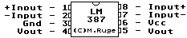

Previous
Next
TOC
LM387 - Low Noise Dual Preamplifier

General Description
The LM387 is a dual preamplifier for the amplification of low level
signals in applications requiring optimum noise performance. Each
of the two amplifiers is completely independent, with an internal
power supply decoupler-regulator, providing 110
dB supply rejection
and 60
dB channel separation. Other outstanding features include
high gain (104
dB), large output voltage swing (Vcc - 2V)p-p, and
wide power bandwidth (75 kHz, 20 Vp-p). The LM387A is a selected
version of the LM387 that has lower noise in a NAB tape circuit,
and can operate on a larger supply voltage. The LM387 operates
from a single supply across the wide range of 9V to 30V, the LM387A
operates on a supply of 9V to 40V. The amplifiers are internally
compensated for gains greater than 10. The LN387, LM387A is avai-
lable in an 8-lead dual-in-line package.
Features
Low noise:
1.0 V total input noise
High gain: 104
dB open loop
Single supply operation
Wide supply range LM387: 9 to 30V LM387A: 9 to 40V
Power supply rejection: 110
dB
Large output voltage swing (Vcx - 2V)p-p
Wide bandwidth 15 MHz unity gain
Power bandwidth 75 kHz, 20 Vp-p
Internally compensated
Short circuit protected
Performance similar to LM381
Kapitel LM387 - Low Noise Dual Preamplifier, Seite 1